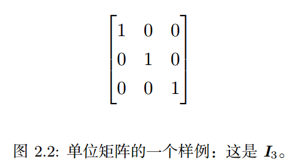

第二章 线性代数
- 标量、向量、矩阵和张量
- 矩阵和向量相乘
- 单位矩阵和逆矩阵
- 线性相关和生成子空间
- 范数
- 特殊类型的矩阵和向量
- 特征分解
- 奇异值分解
- Moore-Penrose伪逆
- 迹运算
- 行列式
- 实例：主成分分析
2.1 标量、向量、矩阵和张量
$\mathit{s} \in \mathbb{R}$, $\mathit{n} \in \mathbb{N}$
$\boldsymbol{\mathit{x}}\in \mathbb{R}^n$
$\boldsymbol{\mathit{A}}\in \mathbb{R}^{m\times n}$
$\textsf{A}_{i,j,k}$
- 矩阵转置（Transpose）：$\boldsymbol{\mathit{A}}^\top$
$(\boldsymbol{\mathit{A}}^\top)_{i,j}= \boldsymbol{\mathit{A}}_{j,i}$
- 标量的转置等于自身：$a = a^\top$

-
形状相同的矩阵可相加：$\boldsymbol{\mathit{C}} = \boldsymbol{\mathit{A}} + \boldsymbol{\mathit{B}}$
$\boldsymbol{\mathit{C}}_{i,j} = \boldsymbol{\mathit{A}}_{i,j} + \boldsymbol{\mathit{B}}_{i,j}$
-
标量与矩阵相乘、相加：$\boldsymbol{\mathit{D}} = a\cdot\boldsymbol{\mathit{B}} + c$
$\boldsymbol{\mathit{D}}_{i,j} = a\cdot \boldsymbol{\mathit{B}}_{i,j} + c$
-
向量与矩阵相加：$\boldsymbol{\mathit{C}} = \boldsymbol{\mathit{A}} + \boldsymbol{\mathit{b}}$
$\boldsymbol{\mathit{C}}_{i,j} = \boldsymbol{\mathit{A}}_{i,j} + \boldsymbol{\mathit{b}}_j$

2.2 矩阵和向量相乘
-
$\boldsymbol{\mathit{C}} = \boldsymbol{\mathit{A}}\boldsymbol{\mathit{B}},$
$\boldsymbol{\mathit{A}}\in \mathbb{R}^{m*n}, \boldsymbol{\mathit{B}}\in \mathbb{R}^{n*p},\boldsymbol{\mathit{C}}\in \mathbb{R}^{m*p}$
$\mathit{C}_{i,j}=\sum_k \mathit{A}_{i,k} \mathit{B}_{k,j}$
- 元素对应乘积（Element-wise product/Hadamard product）:$\boldsymbol{\mathit{A}}\odot \boldsymbol{\mathit{B}}$
- 两向量的点积（Dot product）:$x^\top y$
- 分配率:$\boldsymbol{\mathit{A}}(\boldsymbol{\mathit{B}}+\boldsymbol{\mathit{C}})=\boldsymbol{\mathit{A}}\boldsymbol{\mathit{B}} +\boldsymbol{\mathit{A}}\boldsymbol{\mathit{C}}$
- 结合率:$\boldsymbol{\mathit{A}}(\boldsymbol{\mathit{B}}\boldsymbol{\mathit{C}})=(\boldsymbol{\mathit{A}}\boldsymbol{\mathit{B}})\boldsymbol{\mathit{C}}$
-
交换率:
矩阵相乘不满足：$\boldsymbol{\mathit{A}}\boldsymbol{\mathit{B}}\neq \boldsymbol{\mathit{B}}\boldsymbol{\mathit{A}}$
向量点积满足：$\boldsymbol{\mathit{x}}^\top\boldsymbol{\mathit{y}}=\boldsymbol{\mathit{y}}^\top\boldsymbol{\mathit{x}}$
- 乘积的转置: $(\boldsymbol{\mathit{A}}\boldsymbol{\mathit{B}})^\top=\boldsymbol{\mathit{B}}^\top\boldsymbol{\mathit{A}}^\top$
-
线性方程组:
$\boldsymbol{\mathit{A}}\boldsymbol{\mathit{x}}=\boldsymbol{\mathit{b}}$
$ \boldsymbol{\mathit{A}}_{1,:}\boldsymbol{\mathit{x}}=b_1\\ \boldsymbol{\mathit{A}}_{2,:}\boldsymbol{\mathit{x}}=b_2 \\ \cdots \\ \boldsymbol{\mathit{A}}_{m,:}\boldsymbol{\mathit{x}}=b_m $
$ \boldsymbol{\mathit{A}}_{1,1}x_1+\boldsymbol{\mathit{A}}_{1,2}x_2+\cdots \boldsymbol{\mathit{A}}_{1,n}x_n = b_1\\ \boldsymbol{\mathit{A}}_{2,1}x_1+\boldsymbol{\mathit{A}}_{2,2}x_2+\cdots \boldsymbol{\mathit{A}}_{2,n}x_n = b_2\\ \cdots\\ \boldsymbol{\mathit{A}}_{m,1}x_1+\boldsymbol{\mathit{A}}_{m,2}x_2+\cdots \boldsymbol{\mathit{A}}_{m,n}x_n = b_m. $
2.3 单位矩阵和逆矩阵
-
单位矩阵：$\boldsymbol{\mathit{I}}_{\mathit{n}}\in \mathbb{R}^{\mathit{n}\times \mathit{n}}$
$ \forall \boldsymbol{\mathit{x}} \in \mathbb{R}^{\mathit{n}}, \boldsymbol{\mathit{I}}_{\mathit{n}} \boldsymbol{\mathit{x}} = \boldsymbol{\mathit{x}} $
 -
逆矩阵：矩阵$\boldsymbol{\mathit{A}}$的逆矩阵记作$\boldsymbol{\mathit{A}}^{-1}$，满足：
$\boldsymbol{\mathit{A}}^{-1}\boldsymbol{\mathit{A}} = \boldsymbol{\mathit{I}}_{\mathit{n}}.$
-
解线性方程组：$\boldsymbol{\mathit{A}}\boldsymbol{\mathit{x}}=\boldsymbol{\mathit{b}}$
\begin{gather} \boldsymbol{\mathit{A}}\boldsymbol{\mathit{x}}=\boldsymbol{\mathit{b}} \\ \boldsymbol{\mathit{A}}^{-1}\boldsymbol{\mathit{A}}\boldsymbol{\mathit{x}} = \boldsymbol{\mathit{A}}^{-1}\boldsymbol{\mathit{b}} \\ \boldsymbol{\mathit{I}}_{\mathit{n}} \boldsymbol{\mathit{x}}=\boldsymbol{\mathit{A}}^{-1}\boldsymbol{\mathit{b}} \\ \boldsymbol{\mathit{x}}=\boldsymbol{\mathit{A}}^{-1}\boldsymbol{\mathit{b}}. \end{gather}
2.5 范数
- 范数(norm):衡量向量大小的函数,向量x到原点的距离
- $f(\boldsymbol{\mathit{x}}) = 0 \Rightarrow \boldsymbol{\mathit{x}} = \mathbf{0}$
- $f(\boldsymbol{\mathit{x}} + \boldsymbol{\mathit{y}}) \leq f(\boldsymbol{\mathit{x}}) + f(\boldsymbol{\mathit{y}})$
- $\forall \alpha \in \mathbb{R}$, $f(\alpha \boldsymbol{\mathit{x}}) = |\alpha| f(\boldsymbol{\mathit{x}})$
$L^p：\left\lVert{\boldsymbol{\mathit{x}}}\right\rVert_p = \left( \sum_i |x_i|^p \right)^{\frac{1}{p}}$ $,p\in \mathbb{R}$，$p\geq 1$
范数可以是满足以下性质的任意函数：
- 欧几里德范数,$L^2$：$L^2(x)=\boldsymbol{\mathit{x}}^\top\boldsymbol{\mathit{x}}$
- $L^1$：$\left\lVert{\boldsymbol{\mathit{x}}}\right\rVert_1 = \sum_i |x_i|$
- 最大范数，$L^\infty$：$\left\lVert{\boldsymbol{\mathit{x}}}\right\rVert_\infty = \max_i |x_i|$
- Frobenius范数：衡量矩阵大小 $\left\lVert{\boldsymbol{\mathit{A}}}\right\rVert_F = \sqrt{\sum_{i,j} A_{i,j}^2}$
- 点积：$\boldsymbol{\mathit{x}}^\top\boldsymbol{\mathit{y}} = \left\lVert{\boldsymbol{\mathit{x}}}\right\rVert_2\left\lVert{\boldsymbol{\mathit{y}}}\right\rVert_2 \cos \theta$
2.6 特殊类型的矩阵和向量
- 对角矩阵（Diagonal Matrix）：矩阵$\boldsymbol{\mathit{D}}$是对角矩阵，当且仅当对于所有的$i\neq j$，$\mathit{D}_{i,j}=0$
- $\text{diag}(\boldsymbol{\mathit{v}})$表示对角元素由向量$\mathit{v}$给定的对角矩阵
- $\text{diag}(\boldsymbol{\mathit{v}})\boldsymbol{\mathit{x}}=\boldsymbol{\mathit{v}} \odot \boldsymbol{\mathit{x}}$
- 对角元素非0时，存在逆：$\text{diag}(\boldsymbol{\mathit{v}})^{-1}=\text{diag}([1/v_1,\dots,1/v_n]^\top)$
- 对角矩阵不一定是方阵，非方阵的对角矩阵没有逆矩阵
- 对称矩阵（Symmetric Matrix）：$\boldsymbol{\mathit{A}}=\boldsymbol{\mathit{A}}^\top$
- 单位向量（Unit Vector）：$\left\lVert{\boldsymbol{\mathit{x}}}\right\rVert_2 = 1$
- 正交（Orthogonal）：$\boldsymbol{\mathit{x}}^\top \boldsymbol{\mathit{y}} = 0$
- 标准正交：互为正交的单位向量
-
正交矩阵：$\boldsymbol{\mathit{A}}^\top\boldsymbol{\mathit{A}}=\boldsymbol{\mathit{A}}\boldsymbol{\mathit{A}}^\top=\boldsymbol{\mathit{I}}$
$\boldsymbol{\mathit{A}}^{-1}=\boldsymbol{\mathit{A}}^\top$
2.7 特征分解
- 矩阵分解，类比整数分解
- 特征分解：将矩阵分解成一组特征向量和特征值
- 非零向量$\mathit{v}$为方阵$\mathit{A}$的特征向量，$\lambda$为对应的特征值
- $\mathit{v}$是特征向量，则缩放后的$s\mathit{v}$也是特征向量，通常考虑单位特征向量
$\boldsymbol{\mathit{A}}\boldsymbol{\mathit{v}}=\lambda \boldsymbol{\mathit{v}}$
-
特征矩阵：$\boldsymbol{\mathit{A}}$的$n$个线性无关的特征向量$\{\boldsymbol{\mathit{v}}^{(1)}, \dots, \boldsymbol{\mathit{v}}^{(n)}\}$构成的矩阵
$\boldsymbol{\mathit{V}}=[\boldsymbol{\mathit{v}}^{(1)}, \dots, \boldsymbol{\mathit{v}}^{(n)}]$
- 特征值构成的向量：$\boldsymbol{\lambda} = [\lambda_1, \dots , \lambda_n]^\top$
- $\boldsymbol{\mathit{A}}$的特征分解
- 不是所有矩阵都可以特征分解，且有些矩阵的分解会涉及复数
$\boldsymbol{\mathit{A}} = \boldsymbol{\mathit{V}} \cdot \text{diag}(\boldsymbol{\lambda}) \cdot \boldsymbol{\mathit{V}}^{-1}$
- 实对称矩阵存在实特征向量和实特征值:$\boldsymbol{\mathit{A}} = \boldsymbol{\mathit{Q}} \boldsymbol{\Lambda} \boldsymbol{\mathit{Q}}^\top$.
- 正定矩阵：所有特征值是正数，$\boldsymbol{\mathit{x}}^\top \boldsymbol{\mathit{A}} \boldsymbol{\mathit{x}} =0 \Rightarrow \boldsymbol{\mathit{x}} = \mathbf{0}$.
- 半正定矩阵：所有特征值非负，$\forall \boldsymbol{\mathit{x}}, \boldsymbol{\mathit{x}}^\top \boldsymbol{\mathit{A}} \boldsymbol{\mathit{x}} \geq 0$.
- 负定矩阵：所有特征值是负数.
- 半负定矩阵：所有特征值是非正.
2.8 奇异值分解
- 奇异值分解（singular value decomposition，SVD）：将矩阵分解为奇异向量和奇异值
- 每个实矩阵都有奇异分解
- $\boldsymbol{\mathit{A}}=\boldsymbol{\mathit{U}}\boldsymbol{\mathit{D}}\boldsymbol{\mathit{V}}^\top$
- $\boldsymbol{\mathit{A}}\in \mathbb{R}^{m*n},\boldsymbol{\mathit{U}}\in \mathbb{R}^{m*m}, \boldsymbol{\mathit{D}}\in \mathbb{R}^{m*n}, \boldsymbol{\mathit{V}}\in \mathbb{R}^{n*n}$
- $\boldsymbol{\mathit{U}}$和$\boldsymbol{\mathit{V}}$是正交矩阵，$\boldsymbol{\mathit{D}}$是对角矩阵，但不一定是方阵
- $\boldsymbol{\mathit{D}}$对角线上的值为$\boldsymbol{\mathit{A}}$的奇异值，$\boldsymbol{\mathit{U}}$的列向量为左奇异向量，$\boldsymbol{\mathit{V}}$的列向量为右奇异向量
2.9 Moore-Penrose伪逆
- 非方阵的逆没有定义，$\boldsymbol{\mathit{A}}\boldsymbol{\mathit{x}}=\boldsymbol{\mathit{y}}$,$\boldsymbol{\mathit{x}}=\boldsymbol{\mathit{A}}^+ \boldsymbol{\mathit{y}}$
- 矩阵A的Moore-Penrose伪逆：
- 计算伪逆的公式：
- U、D、V是A奇异值分解得到的矩阵
- 对角矩阵$\boldsymbol{\mathit{D}}$的伪逆$\boldsymbol{\mathit{D}}^+$是其非零元素取倒数之后再转置得到的
$\boldsymbol{\mathit{A}}^+ = \lim_{\alpha \searrow 0} (\boldsymbol{\mathit{A}}^\top\boldsymbol{\mathit{A}} + \alpha \boldsymbol{\mathit{I}})^{-1} \boldsymbol{\mathit{A}}^\top$
$\boldsymbol{\mathit{A}}^+ = \boldsymbol{\mathit{V}}\boldsymbol{\mathit{D}}^+\boldsymbol{\mathit{U}}^\top$
- 当矩阵A的列数多于行数，线性方程有解，$\boldsymbol{\mathit{x}}=\boldsymbol{\mathit{A}}^+\boldsymbol{\mathit{y}}$是方程所有可行解中欧几里得范数最小的一个
- 当矩阵A的行数多于列数，线性方程可能没有解，$\boldsymbol{\mathit{x}}=\boldsymbol{\mathit{A}}^+\boldsymbol{\mathit{y}}$使得$\boldsymbol{\mathit{A}}\boldsymbol{\mathit{x}}$和$\boldsymbol{\mathit{y}}$的欧几里得距离最小
2.10 迹运算
- $\text{Tr}(\boldsymbol{\mathit{A}})= \sum_i \boldsymbol{\mathit{A}}_{i,i}$
- $\left\lVert{\boldsymbol{\mathit{A}}}\right\rVert_F = \sqrt{\text{Tr}(\boldsymbol{\mathit{A}} \boldsymbol{\mathit{A}}^\top)}$
- $\text{Tr}(\boldsymbol{\mathit{A}})=\text{Tr}(\boldsymbol{\mathit{A}}^\top)$
- $\text{Tr}(\boldsymbol{\mathit{A}}\boldsymbol{\mathit{B}}\boldsymbol{\mathit{C}})=\text{Tr}(\boldsymbol{\mathit{C}}\boldsymbol{\mathit{A}}\boldsymbol{\mathit{B}})= \text{Tr}(\boldsymbol{\mathit{B}}\boldsymbol{\mathit{C}}\boldsymbol{\mathit{A}})$
- $\text{Tr}(\prod_{i=1}^n \boldsymbol{\mathit{F}}^{(i)})= \text{Tr}(\boldsymbol{\mathit{F}}^{(n)} \prod_{i=1}^{n-1} \boldsymbol{\mathit{F}}^{(i)})$
- $\boldsymbol{\mathit{A}}\in \mathbb{R}^{m\times n}$，$\boldsymbol{\mathit{B}}\in \mathbb{R}^{n\times m}$
- $\text{Tr}(\boldsymbol{\mathit{A}}\boldsymbol{\mathit{B}})= \text{Tr}(\boldsymbol{\mathit{B}}\boldsymbol{\mathit{A}})$
- $a=\text{Tr}(a)$
2.11 行列式
- $\text{det}(\boldsymbol{\mathit{A}})$
- 将方阵映射到实数的函数，等于特征值的乘积
2.12 实例：主成分分析
对$\mathbb{R} ^ n$中的点进行有损压缩，以减少存储或传输比特，精度丢失尽可能少
- 设计一种编码方式，用低维数据表示
- 每个点$\boldsymbol{\mathit{x}}^{(i)} \in \mathbb{R}^n$, 编码成$\boldsymbol{\mathit{c}}^{(i)}\in \mathbb{R}^l$
- 编码函数, $f(\boldsymbol{\mathit{x}})=\boldsymbol{\mathit{c}}$
- 解码函数，$\boldsymbol{\mathit{x}}\approx g(f(\boldsymbol{\mathit{x}}))$
PCA由选择的解码函数决定
- 简化解码器，选择矩阵乘法
- $g(\boldsymbol{\mathit{c}})=\boldsymbol{\mathit{D}}\boldsymbol{\mathit{c}}$
- $\boldsymbol{\mathit{D}}\in \mathbb{R}^{n\times l}$是解码矩阵
- 限制$\boldsymbol{\mathit{D}}$的列向量有单位范数
- 限制$\boldsymbol{\mathit{D}}$的列向量彼此正交
寻找$\boldsymbol{\mathit{x}}$的最优编码$\boldsymbol{\mathit{c}}^*$
- 最小化原始输入和重构向量的距离
- $\boldsymbol{\mathit{c}}^* = \underset{\boldsymbol{\mathit{c}}}{\arg\min} \left\lVert{\boldsymbol{\mathit{x}}-g(\boldsymbol{\mathit{c}})}\right\rVert_2^2$
$(\boldsymbol{\mathit{x}}-g(\boldsymbol{\mathit{c}}))^\top(\boldsymbol{\mathit{x}}-g(\boldsymbol{\mathit{c}}))$
$= \boldsymbol{\mathit{x}}^\top\boldsymbol{\mathit{x}} - \boldsymbol{\mathit{x}}^\top g(\boldsymbol{\mathit{c}}) - g(\boldsymbol{\mathit{c}})^\top\boldsymbol{\mathit{x}} + g(\boldsymbol{\mathit{c}})^\top g(\boldsymbol{\mathit{c}})$, (分配率)
$= \boldsymbol{\mathit{x}}^\top \boldsymbol{\mathit{x}} - 2\boldsymbol{\mathit{x}}^\top g(\boldsymbol{\mathit{c}}) + g(\boldsymbol{\mathit{c}})^\top g(\boldsymbol{\mathit{c}})$, (标量$g(\boldsymbol{\mathit{c}})^\top\boldsymbol{\mathit{x}}$的转置等于自己)
$\boldsymbol{\mathit{c}}^* = \underset{\boldsymbol{\mathit{c}}}{\arg\min} - 2\boldsymbol{\mathit{x}}^\top g(\boldsymbol{\mathit{c}}) + g(\boldsymbol{\mathit{c}})^\top g(\boldsymbol{\mathit{c}})$
$= \underset{\boldsymbol{\mathit{c}}}{\arg\min} - 2\boldsymbol{\mathit{x}}^\top\boldsymbol{\mathit{D}}\boldsymbol{\mathit{c}} + \boldsymbol{\mathit{c}}^\top\boldsymbol{\mathit{D}}^\top\boldsymbol{\mathit{D}}\boldsymbol{\mathit{c}}$, (带入g(c))
$ = \underset{\boldsymbol{\mathit{c}}}{\arg\min} -2\boldsymbol{\mathit{x}}^\top\boldsymbol{\mathit{D}}\boldsymbol{\mathit{c}} + \boldsymbol{\mathit{c}}^\top\boldsymbol{\mathit{I}}_l\boldsymbol{\mathit{c}}$, (矩阵D的正交性和单位范数约束)
$ = \underset{\boldsymbol{\mathit{c}}}{\arg\min} -2\boldsymbol{\mathit{x}}^\top\boldsymbol{\mathit{D}}\boldsymbol{\mathit{c}} + \boldsymbol{\mathit{c}}^\top\boldsymbol{\mathit{c}}$
最优化问题，梯度为0
$ \nabla_{\boldsymbol{\mathit{c}}} (-2\boldsymbol{\mathit{x}}^\top \boldsymbol{\mathit{D}} \boldsymbol{\mathit{c}} + \boldsymbol{\mathit{c}}^\top\boldsymbol{\mathit{c}}) = 0\\ -2\boldsymbol{\mathit{D}}^\top\boldsymbol{\mathit{x}} + 2\boldsymbol{\mathit{c}} = 0\\ \boldsymbol{\mathit{c}} = \boldsymbol{\mathit{D}}^\top \boldsymbol{\mathit{x}}$
编码函数：$f(\boldsymbol{\mathit{x}})=\boldsymbol{\mathit{D}}^\top\boldsymbol{\mathit{x}}$
PCA重构：$r(\boldsymbol{\mathit{x}})=g(f(\boldsymbol{\mathit{x}})) = \boldsymbol{\mathit{D}}\boldsymbol{\mathit{D}}^\top \boldsymbol{\mathit{x}}$
确定矩阵D
最小化所有点与其重构的误差，误差矩阵的frobenius范数
$\boldsymbol{\mathit{D}}^* = \underset{\boldsymbol{\mathit{D}}}{\arg\min} \sqrt{\sum_{i,j}\left( \boldsymbol{\mathit{x}}_j^{(i)} - r(\boldsymbol{\mathit{x}}^{(i)})_j\right)^2} \text{ subject to } \boldsymbol{\mathit{D}}^\top\boldsymbol{\mathit{D}} = \boldsymbol{\mathit{I}}_l$
考虑$l=1$的情况，即降至1维，$\boldsymbol{\mathit{D}}$是一个单一向量$\boldsymbol{\mathit{d}}$
$\boldsymbol{\mathit{d}}^* = \underset{\boldsymbol{\mathit{d}}}{\arg\min} \sum_i \left\lVert{\boldsymbol{\mathit{x}}^{(i)} - \boldsymbol{\mathit{d}}\boldsymbol{\mathit{d}}^\top \boldsymbol{\mathit{x}}^{(i)}}\right\rVert_2^2 \text{ subject to } {\left\lVert{\boldsymbol{\mathit{d}}}\right\rVert}_2 = 1$
将标量$\boldsymbol{\mathit{d}}^\top\boldsymbol{\mathit{x}}^{(i)}$放在向量$\boldsymbol{\mathit{d}}$的右边
$\boldsymbol{\mathit{d}}^* = \underset{\boldsymbol{\mathit{d}}}{\arg\min} \sum_i \left\lVert{\boldsymbol{\mathit{x}}^{(i)} - \boldsymbol{\mathit{d}}^\top \boldsymbol{\mathit{x}}^{(i)}\boldsymbol{\mathit{d}}}\right\rVert_2^2 \text{ subject to } {\left\lVert{\boldsymbol{\mathit{d}}}\right\rVert}_2 = 1$
使用矩阵简化描述
编码函数：$c = f(\boldsymbol{\mathit{x}})=\boldsymbol{\mathit{X}}\boldsymbol{\mathit{d}}$
解码函数：$f(c)=c\boldsymbol{\mathit{d}}^\top$
优化问题：
$\boldsymbol{\mathit{d}}^* = \underset{\boldsymbol{\mathit{d}}}{\arg\min} \left\lVert{\boldsymbol{\mathit{X}} - \boldsymbol{\mathit{X}}\boldsymbol{\mathit{d}}\boldsymbol{\mathit{d}}^\top}\right\rVert_F^2 \text{ subject to } \boldsymbol{\mathit{d}}^\top \boldsymbol{\mathit{d}} = 1$
使用矩阵简化描述
不考虑约束：$\left\lVert{\boldsymbol{\mathit{A}}}\right\rVert_F = \sqrt{\text{Tr}(\boldsymbol{\mathit{A}} \boldsymbol{\mathit{A}}^\top)}$
$\boldsymbol{\mathit{d}}^* = \underset{\boldsymbol{\mathit{d}}}{\arg\min} \left\lVert{\boldsymbol{\mathit{X}} - \boldsymbol{\mathit{X}}\boldsymbol{\mathit{d}}\boldsymbol{\mathit{d}}^\top}\right\rVert_F^2$
$= \underset{\boldsymbol{\mathit{d}}}{\arg\min} \, \text{Tr} \left( \left( \boldsymbol{\mathit{X}} - \boldsymbol{\mathit{X}} \boldsymbol{\mathit{d}}\boldsymbol{\mathit{d}}^\top \right)^\top \left( \boldsymbol{\mathit{X}} - \boldsymbol{\mathit{X}} \boldsymbol{\mathit{d}}\boldsymbol{\mathit{d}}^\top \right) \right)$
$ = \underset{\boldsymbol{\mathit{d}}}{\arg\min} \, \text{Tr} \left( \boldsymbol{\mathit{X}}^\top\boldsymbol{\mathit{X}} - \boldsymbol{\mathit{X}}^\top\boldsymbol{\mathit{X}} \boldsymbol{\mathit{d}}\boldsymbol{\mathit{d}}^\top - \boldsymbol{\mathit{d}}\boldsymbol{\mathit{d}}^\top \boldsymbol{\mathit{X}}^\top\boldsymbol{\mathit{X}} + \boldsymbol{\mathit{d}}\boldsymbol{\mathit{d}}^\top \boldsymbol{\mathit{X}}^\top\boldsymbol{\mathit{X}}\boldsymbol{\mathit{d}}\boldsymbol{\mathit{d}}^\top \right)$
$ = \underset{\boldsymbol{\mathit{d}}}{\arg\min} \, \text{Tr}( \boldsymbol{\mathit{X}}^\top\boldsymbol{\mathit{X}}) - \text{Tr}(\boldsymbol{\mathit{X}}^\top\boldsymbol{\mathit{X}} \boldsymbol{\mathit{d}}\boldsymbol{\mathit{d}}^\top) - \text{Tr}(\boldsymbol{\mathit{d}}\boldsymbol{\mathit{d}}^\top \boldsymbol{\mathit{X}}^\top\boldsymbol{\mathit{X}}) + \text{Tr}(\boldsymbol{\mathit{d}}\boldsymbol{\mathit{d}}^\top \boldsymbol{\mathit{X}}^\top\boldsymbol{\mathit{X}}\boldsymbol{\mathit{d}}\boldsymbol{\mathit{d}}^\top)$
$= \underset{\boldsymbol{\mathit{d}}}{\arg\min} \, - \text{Tr}(\boldsymbol{\mathit{X}}^\top\boldsymbol{\mathit{X}} \boldsymbol{\mathit{d}}\boldsymbol{\mathit{d}}^\top) - \text{Tr}(\boldsymbol{\mathit{d}}\boldsymbol{\mathit{d}}^\top \boldsymbol{\mathit{X}}^\top\boldsymbol{\mathit{X}}) + \text{Tr}(\boldsymbol{\mathit{d}}\boldsymbol{\mathit{d}}^\top \boldsymbol{\mathit{X}}^\top\boldsymbol{\mathit{X}}\boldsymbol{\mathit{d}}\boldsymbol{\mathit{d}}^\top)$, (去掉与d无关项)
使用矩阵简化描述
$= \underset{\boldsymbol{\mathit{d}}}{\arg\min} \, - \text{Tr}(\boldsymbol{\mathit{X}}^\top\boldsymbol{\mathit{X}} \boldsymbol{\mathit{d}}\boldsymbol{\mathit{d}}^\top) - \text{Tr}(\boldsymbol{\mathit{d}}\boldsymbol{\mathit{d}}^\top \boldsymbol{\mathit{X}}^\top\boldsymbol{\mathit{X}}) + \text{Tr}(\boldsymbol{\mathit{d}}\boldsymbol{\mathit{d}}^\top \boldsymbol{\mathit{X}}^\top\boldsymbol{\mathit{X}}\boldsymbol{\mathit{d}}\boldsymbol{\mathit{d}}^\top)$, (去掉与d无关项)
$= \underset{\boldsymbol{\mathit{d}}}{\arg\min} \, - 2\text{Tr}(\boldsymbol{\mathit{X}}^\top\boldsymbol{\mathit{X}} \boldsymbol{\mathit{d}}\boldsymbol{\mathit{d}}^\top) + \text{Tr}(\boldsymbol{\mathit{d}}\boldsymbol{\mathit{d}}^\top \boldsymbol{\mathit{X}}^\top\boldsymbol{\mathit{X}}\boldsymbol{\mathit{d}}\boldsymbol{\mathit{d}}^\top)$, (迹运算循环)
$= \underset{\boldsymbol{\mathit{d}}}{\arg\min} \, - 2\text{Tr}(\boldsymbol{\mathit{X}}^\top\boldsymbol{\mathit{X}} \boldsymbol{\mathit{d}}\boldsymbol{\mathit{d}}^\top) + \text{Tr}(\boldsymbol{\mathit{X}}^\top\boldsymbol{\mathit{X}}\boldsymbol{\mathit{d}}\boldsymbol{\mathit{d}}^\top\boldsymbol{\mathit{d}}\boldsymbol{\mathit{d}}^\top )$, (迹运算循环)
加入约束条件
$\underset{\boldsymbol{\mathit{d}}}{\arg\min} \, - 2\text{Tr}(\boldsymbol{\mathit{X}}^\top\boldsymbol{\mathit{X}} \boldsymbol{\mathit{d}}\boldsymbol{\mathit{d}}^\top) + \text{Tr}(\boldsymbol{\mathit{X}}^\top\boldsymbol{\mathit{X}}\boldsymbol{\mathit{d}}\boldsymbol{\mathit{d}}^\top\boldsymbol{\mathit{d}}\boldsymbol{\mathit{d}}^\top ) \text{ subject to } \boldsymbol{\mathit{d}}^\top \boldsymbol{\mathit{d}} = 1$
$= \underset{\boldsymbol{\mathit{d}}}{\arg\min} \, - 2\text{Tr}(\boldsymbol{\mathit{X}}^\top\boldsymbol{\mathit{X}} \boldsymbol{\mathit{d}} \boldsymbol{\mathit{d}}^\top) + \text{Tr}(\boldsymbol{\mathit{X}}^\top\boldsymbol{\mathit{X}}\boldsymbol{\mathit{d}}\boldsymbol{\mathit{d}}^\top ) \text{ subject to } \boldsymbol{\mathit{d}}^\top \boldsymbol{\mathit{d}} = 1$, (因为约束条件)
$= \underset{\boldsymbol{\mathit{d}}}{\arg\min} \, - \text{Tr}(\boldsymbol{\mathit{X}}^\top\boldsymbol{\mathit{X}} \boldsymbol{\mathit{d}}\boldsymbol{\mathit{d}}^\top) \text{ subject to } \boldsymbol{\mathit{d}}^\top \boldsymbol{\mathit{d}} = 1$
$ = \underset{\boldsymbol{\mathit{d}}}{\arg\max} \, \text{Tr}(\boldsymbol{\mathit{X}}^\top\boldsymbol{\mathit{X}} \boldsymbol{\mathit{d}}\boldsymbol{\mathit{d}}^\top) \text{ subject to } \boldsymbol{\mathit{d}}^\top \boldsymbol{\mathit{d}} = 1$
$= \underset{\boldsymbol{\mathit{d}}}{\arg\max} \, \text{Tr}(\boldsymbol{\mathit{d}}^\top\boldsymbol{\mathit{X}}^\top\boldsymbol{\mathit{X}} \boldsymbol{\mathit{d}}) \text{ subject to } \boldsymbol{\mathit{d}}^\top \boldsymbol{\mathit{d}} = 1$
最终优化问题
$\underset{\boldsymbol{\mathit{d}}}{\arg\max} \, \text{Tr}(\boldsymbol{\mathit{d}}^\top\boldsymbol{\mathit{X}}^\top\boldsymbol{\mathit{X}} \boldsymbol{\mathit{d}}) \text{ subject to } \boldsymbol{\mathit{d}}^\top \boldsymbol{\mathit{d}} = 1$
优化问题可利用特征分解求解，最优的$\boldsymbol{\mathit{d}}$是$\boldsymbol{\mathit{X}}^\top\boldsymbol{\mathit{X}}$最大特征值的特征向量
归纳法，l维主成分为最大的l个特征值对应的特征向量